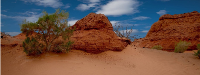

Evolution of Gobi Desert
the timeline of Gobi Desert between China and Monggolia from 1920's to Present.
Introduction of Evolution
Researched by Jian Andrei Llamado
Evolution is the change in the characteristics of a species over several generations and relies on the process of natural selection.
Environmental change and isolation of groups of organisms play an important role in evolution. Environmental change is any change in an environment to which an organism must adapt. Change can be gradual, such as when mountains or deserts form, other species die out, or new species evolve.
Evolution of Gobi Desert
Researched by Anya Pathricia Nuguid, Micaela Garcia, Emmanuel Burton, Juan Carlos Miguel, John Philip Caballero, Carl Angelo Sunga
Introduction
The Gobi Desert is a vast, arid region in northern China and southern Mongolia. It's known for its dunes, mountains and rare animals such as snow leopards and Bactrian camels. In the Gobi Gurvansaikhan National Park, the Khongoryn Els sand dunes are said to sing when the wind blows. The park also features the deep ice field of Yolyn Am canyon. Dinosaur fossils have been found at the red "Flaming Cliffs" of Bayanzag.
1920's
- Bayanzag/Flaming Cliffs
- - first discovered by Roy Chapman Andrews, famous American explorer in the 1920, flaming cliffs of Bayanzag are an important site for both archeological and paleontological finds. Complete dinosaur skeletons, including One-horned dinosaur (protocertops) and Egg-thief (Oviraptor) and numerous eggs were excavated in ravines between the red flaming cliffs, which look like fire in the middle of the desert from distance.
1940's
Ellerman, J. R., Hayman, R. W. and Holt, G. W. C. 1940. The families and genera of living rodents Vol. 1 British Museum, London, England.
As Mongolia transitioned to a communist state, only Soviet, Polish and Chinese teams led paleontological expeditions into the Gobi. In the 1940s Soviet scientists helped find the remains of a Tyrannosaurus relative called Tarbosaurus. Later, in 1971, a Polish team found one of the most famous fossils ever discovered. It featured Velociraptor locked in an attack pose with Protoceratops.
In 1990, after anti-Communist revolutions changed the government of Mongolia, U.S. paleontologists were invited back to the Gobi. This led to another wave of incredible fossil finds. Once again, the American Museum sent expeditions into the desert this time led by paleontologists Michael Novacek and Mark Norell.
The team returned to the Flaming Cliffs and its series of rock layers called the Djadochta Formation. They discovered dinosaurs such as Citipati, a relative of Oviraptor. Remarkable skeletons of Citipati nicknamed "Big Mamma" and "Big Auntie" were found on top of their clutches of eggs. Because many of the eggs are arranged in a way where the mother’s body does not cover them, paleontologists think Citipati and other dinosaurs had feathers that could be used in brooding to warm the eggs. American Museum expeditions also found male and female members of another Oviraptor relative called Khaan fossilized together. They were introduce to public as "Romeo and Juliet".
1980's
1980's In the Mogao Caves complex near the city Dunhuang in Gansu province was designated a UNESCO World Heritage site. This is a series of Buddhist cave temples in China dating from the 4th to the 10th-century housing important historical paintings.
Species that are threatened during this period.
Jerboas
The jerboas are hopping desert rodents that are found in the Gobi Desert. The jerboa inhabits cold and hot deserts but prefers to inhabit hot desert habitats. These animals are fast runners and can run when chased at up to 24 km per hour. Jerboas also possess a strong sense of hearing. These animals eat plants and beetles. It is threatened by habitat loss due to various human activites, and they are prone to parasitic diseases.

Saxaul
Saxaul, also called Saksaul or Black saxaul is a small tree. The tree is often bent in gnarly shapes by the wind. The leaves of the tree are small, which help it conserve water, a sparse commodity in the desert.
2000's
Beyond the Great Green Wall, China has taken other measures against encroaching deserts. A series of laws starting in the early 2000s also targeted the problem, including efforts to return some farm and grazing lands to a more natural state of forests or grasslands.
Present (2019)
The desert basins of the Gobi are bounded by the Altai Mountains and the grasslands and steppes of Mongolia on the north, by the Taklamakan Desert to the west, by the Hexi Corridor and Tibetan Plateau to the southwest and by the North China Plain to the southeast.